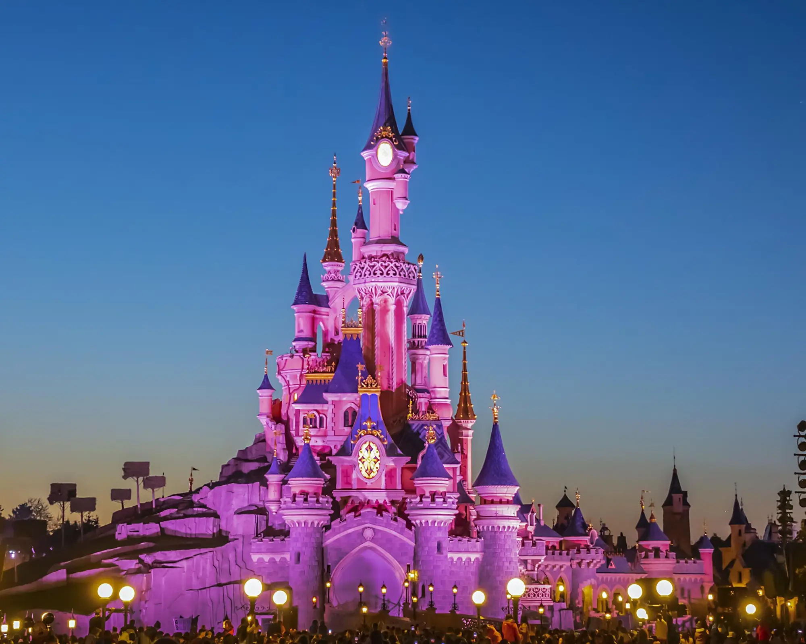

Famous Tourist Places in Paris
Eiffel Tower
The Eiffel Tower in Paris, France, has serious celeb status. Completed in March 1889, it's one of the most recognizable monuments in the world.

Louvre Museum
The Louvre is the most visited art museum in the world. Located in the heart of Paris, this historic building is a former royal palace, with an area of 210,000 square meters including 60,600 for the exhibitions.

Cruise on the Seine
Best way to visit the "City of Light" enjoying a cruise on the Seine, especially at night. When the sun sets, the monuments are lit slowly. You get a panoramic view to the forefront so you can enjoy the beauty of Paris

The Latin Quarter - Luxembourg park
The Luxembourg park is a private garden open to the public created in 1612 at the request of Marie de Medicis to accompany the Luxembourg Palace.

Disneyland Paris
Disneyland Paris has two theme parks: Disneyland (with Sleeping Beauty's castle) and Walt Disney Studios. Top attractions are Space Mountain, It's a Small World and Big Thunder Mountain.
